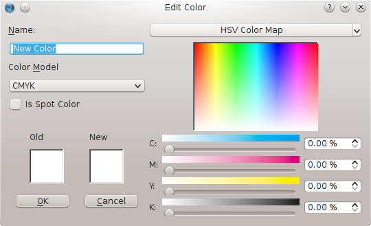
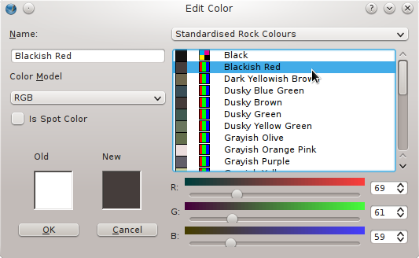
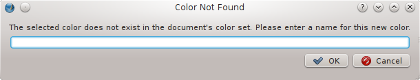
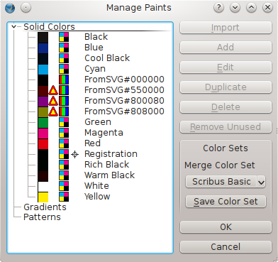

Here is the new dialog we now get with Edit > Colors, now renamed Manage Paints for 1.5+ versions of Scribus. You may notice that the default palette is now Scribus Small, similar to Scribus Basic, but with fewer blacks, and no RGB colors. A more obvious change is that now we can edit Patterns and Gradients here, though this screenshot shows neither are present in the default state.
A less obvious change is that there is only one functional mode for Edit > Colors, in other words, you get the same dialog whether or not a document is open. What this means is that you can now manage color sets even while a document is open. Here we see what is usable when the dialog first appears, and a sensible question would be, "How do I add a color when the Add button is greyed out?". The answer: click Solid Colors to highlight it, and THEN we can see that the Import, Add, and Remove Unused buttons are now active. We can't Edit or Duplicate because we haven't selected a particular color. But wait! We can Delete? Yes – we can delete every single color in the palette! So be mindful of this.
If you do delete all your colors, what happens with this palette is that you are left with Black, Registration Black, and White. Incidentally, this is also the end result when click Remove Unused with an empty document.
|
|
 |
You have 3 Color Models to choose from: RGB, CMYK, and Web Safe RGB. This last choice limits the values to those which will display the same on 8-bit and 16-bit color systems.
If you click the button in the upper right of the Edit Color dialog, an extremely long list of choices appears, consisting of all the color sets available in Scribus. Now click one of these colors and its name and RGB/CMYK values are your new color. Many of the color sets contain proprietary spot colors. |
|  |
The little eyedropper on the toolbar activates the color picker, after which clicking on some spot on the screen grabs its color. You can expect to be presented with a dialog asking for a name for this color. If you don't name it, the color will not be added, even if you click OK

In the Colors dialog above, click a color you wish to modify. This will of course bring up Edit Color, but click Cancel, so that you can go back and click Duplicate. Now your color name will show as Copy of ... and you can edit in the various ways we have shown and change the name.
You can do this individually, by highlighting a color then clicking Delete, or you might consider reducing the number of colors on the list by clicking Remove Unused, which deletes any colors you have not actually used in your document.
If you begin with a previously saved document, you will use its color set. If you extrapolate from this fact, then you might choose to open a document, delete its content, and File > Save As under a new name.
You might even anticipate this, especially if you have a customized color palette, by saving an empty document named something like "colorscheme3.sla" or some other meaningful guide to finding it later.
You could also consider that when you import a page from another document, its colors will be imported. Lastly, even if you have already begun a new document, you can open Edit > Colors, and choose Import from the dialog to import the colors from another document.Whenever you import an object from the Scrapbook, its colors will be added to the document. Similarly, vector graphics (SVG, EPS, and so on) will also add any colors they may contain.
|  |
In this example, following import of an SVG, we take a look at the Colors dialog (Edit > Colors), so that we can point out some particulars. We started out with the Scribus Basic color set, then imported an SVG, which has added these colors which begin with FromSVG. Scribus does not ask you for your Ok to do this – for one thing, consider the job this would create for a many-colored graphic. In case you only want to import the colors from a vector file (EPS and variants, PS), or from suitable palette files [AI (Adobe Illustrator) GPL (Gimp color palettes), SOC (OpenDocument color palettes), or a suitably formatted Scribus XML description], this would also be an option by selecting Import in the Colors dialog. |
Notice the many blacks we have here, yet each is unique. Our newly added black, FromSVG#000000, is an RGB black, all the others are CMYK blacks. If you hover your mouse cursor over each one, you will see the differences.
| C% | M% | Y% | K% | |
| Black | 0 | 0 | 0 | 100 |
| Cool Black | 60 | 0 | 0 | 100 |
| Registration | 100 | 100 | 100 | 100 |
| Rich Black | 60 | 40 | 40 | 100 |
| Warm Black | 0 | 60 | 30 | 100 |